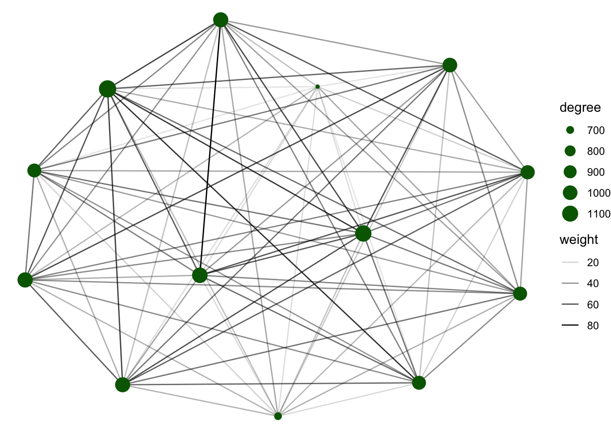

In this section we will use a different dataset which consist on GPS locations of 3 different species.
We will define our contact network based on proximity between two animals from the GPS location records.
# libraries we will use
library(dplyr)
library(sf)
library(sp)
library(ggplot2)
# We get the data from the STNet package
GPSc <- STNet::GPScFirst we will see how many locations were recorded during the observation period by species:
GPSc %>%
group_by(species_type) %>%
summarise(N = n())## # A tibble: 3 × 2
## species_type N
## <fct> <int>
## 1 cattle 9309
## 2 deer 11511
## 3 pig 4428Now lets create a dataset for the nodes.
Nodes <- GPSc %>%
distinct(CollarID, species_type)Now lets see how does the GPS records varies during the observation period:
Daily <- GPSc %>%
count(Date, species_type)
ggplot() +
geom_line(data = Daily, aes(x = Date, y = n, color = species_type), size = 1) +
theme_minimal()First we will tronsform our data into a spatial points object.
GPScSP <- GPSc %>%
st_as_sf(coords = c("X", "Y"), crs = st_crs(4326)) %>%
st_transform(st_crs(32615))Now we use geom_sf() to see the locations on a map.
ggplot() +
geom_sf(data = GPScSP, aes(color = species_type), show.legend = "point") +
theme_minimal()It looks like the 3 different species have movement ranges where they coincide. To identify where are the species coinciding more often we will use a hexagonal grid.
The STNet package includes a function called HexGrid, which creates a hexagonal grid on a spatial field. Here we will use the extent of our points to create the grid.
# First we create a field that represents the study area:
Border <- as(raster::extent(GPScSP), "SpatialPolygons") %>%
st_as_sf()
# We define the CRS
st_crs(Border) <- st_crs(GPScSP)# Load the STNet library:
library(STNet)
# We use the HexGrid function:
BorderHex <- HexGrid(cellsize = 500, Shp = Border)## Warning in proj4string(obj): CRS object has comment, which is lost in output; in tests, see
## https://cran.r-project.org/web/packages/sp/vignettes/CRS_warnings.html## Warning: use *apply and slot directly## Warning: use *apply and slot directly# Plot the grid:
plot(BorderHex$geometry)Next we wull use another function from the STNet package that counts the number of points per hexagonal cell. The arguments we need are:
Hex, the hexagonal grid we created.Points The locations that we want to count. for this function is also necesary to have installed the package sp, so make sure its installed and loaded.Now lets plot the movement ranges for the species on the observed period:
# For cattle:
GPScSP %>%
filter(species_type == "cattle") %>%
HexMap(Hex = BorderHex, .) %>%
ggplot(., aes(fill = N)) +
geom_sf() +
scale_fill_gradient(low="white", high="red") +
ggtitle("Cattle Range") +
theme_void()Exercise: Create the range maps for the other 2 species (deer y pig) and use different colors.
Now we will define our network. We are interested in all the contacts that happened between animals at a distance of < 1 m.
This function might take some time, if you want to skip this part, the data is available inside the STNet package.
# Lets change the names to test the function:
colnames(GPSc)[c(1, 4, 6, 7)] <- c("id", "date", "Longitude", "Latitude")
# Run the function
Edges <- CreateNetwork(DF = GPSc[,], # This is our data
DTh = 1, # TTthe distance threshold
DateTime = "date", # Name of the variable that indicates the date and time
ID = "id", # name of variable for id
coords = c("Longitude", "Latitude") # Name of variable for coordinated
) # 14,869To load the data directly from the STNet package we can use the function:
Edges <- STNet::.This dataset includes:
We can also detect areas where the contacts between species are happening.
For this we will create a subset of the data that includes only contacts between different species.
# Add variable for species
Edges <- Edges %>%
left_join(Nodes, by = c("Var1" = "CollarID")) %>% #Var1 one of the nodes
rename(Sp1 = species_type) %>%
left_join(Nodes, by = c("Var2" = "CollarID")) %>% # Var 2 is the other node
rename(Sp2 = species_type)
InterSp <- Edges %>%
filter(Sp1 != Sp2) %>% # select contacts where the species are different
data.frame()InterSp_sp <- InterSp %>%
dplyr::select(DateTime, Var1, Var2, Sp1, Sp2, X.x, Y.x) %>%
st_as_sf(coords = c("X.x", "Y.x"), crs = st_crs("+init=EPSG:4326")) %>%
st_transform(st_crs(32615))
IspH <- HexMap(BorderHex, Points = InterSp_sp)
ggplot(IspH, aes(fill = N)) +
geom_sf() +
scale_fill_gradient(low="white", high="gold3") +
ggtitle("Contacts between species") +
theme_void()We previously defined the nodes, we can see that there are 36 animals in our network.
Nodes %>%
count(species_type)## species_type n
## 1 cattle 13
## 2 deer 16
## 3 pig 7# Libraries we will use:
library(igraph)
library(scales)
# Create the network:
G1 <- graph_from_data_frame(Edges[c("Var1", "Var2")], vertices = Nodes, directed = F)
# Create a variable to count the number of contact:
E(G1)$w <- 1
# Simplifying the network:
G1s <- simplify(G1, # Name of the network
remove.multiple = T, # Remove multiple contacts
edge.attr.comb = list(w = "sum")) # Function to do with the multiple contacts
# calculate the degree (since its not directed we can not define indegree or outdegree)
V(G1)$degree <- degree(G1, mode = "all")
plot(G1s,
edge.color = alpha("black", rescale(E(G1s)$w, c(0.01, 1))), # use number of contacts for transparency
layout = layout_with_kk,
vertex.label = NA,
vertex.size = rescale(V(G1)$degree, c(1, 15)))To create a subset of our network we can use the function induced_graph, where we need to specify the network that we will extract from and the ids of the nodes, for this we use the function which() and specify that we watn the deer only.
VIDs <- which(V(G1)$species_type == "deer")
DeerG <- induced_subgraph(graph = G1s, vids = VIDs)
plot(DeerG,
edge.color = alpha("black", rescale(E(DeerG)$w, c(0.01, 1))),
layout = layout_with_kk,
vertex.label = NA,
vertex.size = rescale(V(G1)$degree[VIDs], c(1, 15)),
vertex.color = "darkgreen")
Exercise: create the network for the other 2 species